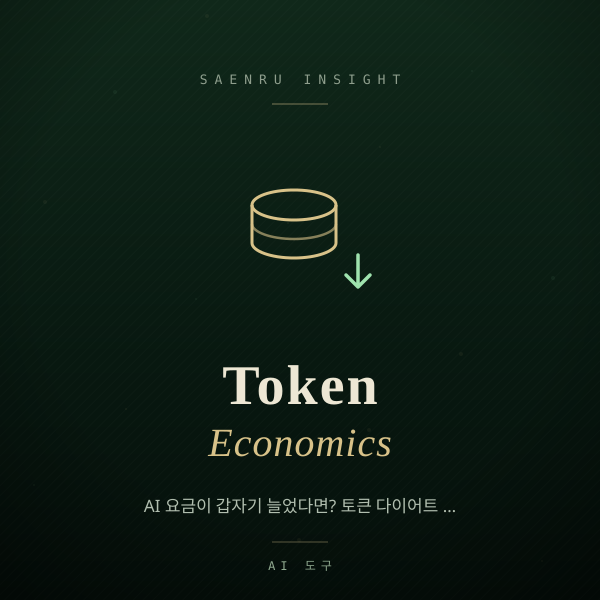

AI 요금이 갑자기 늘었다면? 토큰 다이어트 6가지
1인 빌더와 소규모 팀이 품질을 지키면서 AI API 비용을 줄이는 실전 절감법 6가지를 정리했습니다.

AI 기능을 붙일 때는 "이 정도 요금이면 괜찮네" 싶었는데, 사용자가 늘고 기능이 몇 개 추가되자 청구서가 눈에 띄게 무거워지는 경험. 요즘 AI를 제품에 넣은 작은 팀이라면 한 번쯤 겪는 일입니다.
문제는 대부분의 비용 증가가 사용자가 늘어서가 아니라 설계가 헐거워서 생긴다는 점입니다.
같은 결과를 내면서도 토큰을 훨씬 덜 쓰는 방법이 꽤 많습니다.
AI 비용은 왜 갑자기 늘어날까?
대부분의 비용 급증은 요청 횟수가 아니라 요청 1건당 입력 토큰에서 발생합니다.
프롬프트에 매뉴얼 전문, 대화 기록 전체, 검색 결과 20건을 매번 통째로 넣으면 사용자는 그대로여도 비용은 몇 배가 됩니다.
즉 비용 구조를 볼 때는 총액이 아니라 '호출 1회당 평균 입력 토큰'을 먼저 봐야 합니다.
실제로 작은 팀에서 자주 보이는 낭비 패턴은 다음과 같습니다.
- 시스템 프롬프트에 넣어둔 회사 소개·톤앤매너 안내문이 계속 길어져 수천 토큰이 됨
- 챗봇이 대화 전체 이력을 매 턴마다 다시 전송
- RAG 검색에서 문서 조각을 넉넉히 20~30개씩 넣고 모델이 알아서 고르게 함
- 분류·요약처럼 단순한 작업까지 가장 비싼 최상위 모델로 처리
- 동일한 질문("영업시간 알려주세요")에 매번 새로 모델을 호출
- 에이전트가 실패하면 자동 재시도하는데, 실패 로그가 없어 몇 번 도는지 아무도 모름
비용을 줄이는 가장 빠른 방법은?
가장 효과가 큰 순서는 캐싱, 모델 분리, 컨텍스트 축소입니다.
코드를 크게 고치지 않고도 적용할 수 있는 것부터 손대는 게 정석입니다.
아래 여섯 가지를 위에서부터 순서대로 점검해 보세요.
- 프롬프트 캐싱을 켠다. OpenAI와 Anthropic Claude 등 주요 API는 반복되는 앞부분 프롬프트를 캐시해 할인된 단가로 처리합니다.
고정 지시문을 프롬프트 맨 앞에, 매번 바뀌는 사용자 입력을 맨 뒤에 두는 것만으로 적용률이 올라갑니다. - 결과 캐싱을 붙인다. FAQ성 질문은 답이 거의 같습니다.
질문을 정규화한 값을 키로 삼아 하루~일주일 단위로 답변을 저장해 두면 모델을 아예 부르지 않습니다. - 작업별로 모델을 나눈다. 문의 분류, 키워드 추출, 스팸 판별 같은 일은 소형·경량 모델로 충분합니다.
최종 답변 작성처럼 품질이 매출과 직결되는 지점에만 상위 모델을 씁니다.
LiteLLM이나 OpenRouter를 쓰면 코드 수정 없이 모델을 바꿔 끼우며 비교할 수 있습니다. - 컨텍스트를 줄인다. RAG 검색 결과는 재순위(rerank) 후 상위 3~5개만 넣고, 대화 이력은 최근 몇 턴 + 요약본 조합으로 대체합니다.
30페이지 매뉴얼을 통째로 넣는 대신 해당 섹션만 넣는 식입니다. - 급하지 않은 일은 배치로 돌린다. 상품 설명 1,000건 생성, 리뷰 일괄 분류처럼 실시간이 아닌 작업은 배치(Batch) API가 더 저렴한 요금으로 제공됩니다.
밤에 돌려 아침에 받으면 됩니다. - 출력 길이를 제한한다. 출력 토큰은 대개 입력보다 비쌉니다.
"3문장 이내", "JSON만 반환" 같은 제약과 max_tokens 설정을 함께 걸어두세요.
비용을 줄이면서 품질은 어떻게 지킬까?
모델을 바꿀 때 감으로 판단하면 반드시 사고가 납니다.
작더라도 평가셋을 먼저 만들어 두면, 저렴한 모델로 내려도 안전한 구간과 그렇지 않은 구간이 명확히 갈립니다.
완벽한 벤치마크가 아니라 우리 서비스의 실제 질문 모음이면 충분합니다.
예를 들어 쇼핑몰 고객 문의 봇이라면, 지난달 실제 문의 중 대표 유형 30개(배송 조회, 교환 규정, 사이즈 추천, 재고 문의 등)를 뽑고 각각의 '정답에 가까운 답변'을 정리해 둡니다.
모델이나 프롬프트를 바꿀 때마다 이 30개를 돌려 오답과 톤을 사람이 눈으로 확인하면, 절감이 안전한지 10분 안에 판단할 수 있습니다.
Langfuse나 Helicone 같은 관측 도구를 붙이면 호출별 토큰과 지연 시간, 실패율이 함께 쌓여 어디서 돈이 새는지도 보입니다.
정리하면 순서는 이렇습니다. 먼저 측정하고(호출당 토큰), 캐싱으로 반복을 없애고, 작업별로 모델을 나누고, 평가셋으로 품질을 확인한다. 이 네 단계만 지켜도 대부분의 소규모 서비스는 체감할 만큼 요금이 내려갑니다.
AI 비용은 결국 기능 문제가 아니라 설계 문제이고, 설계는 작은 팀이 가장 빨리 고칠 수 있는 영역입니다.